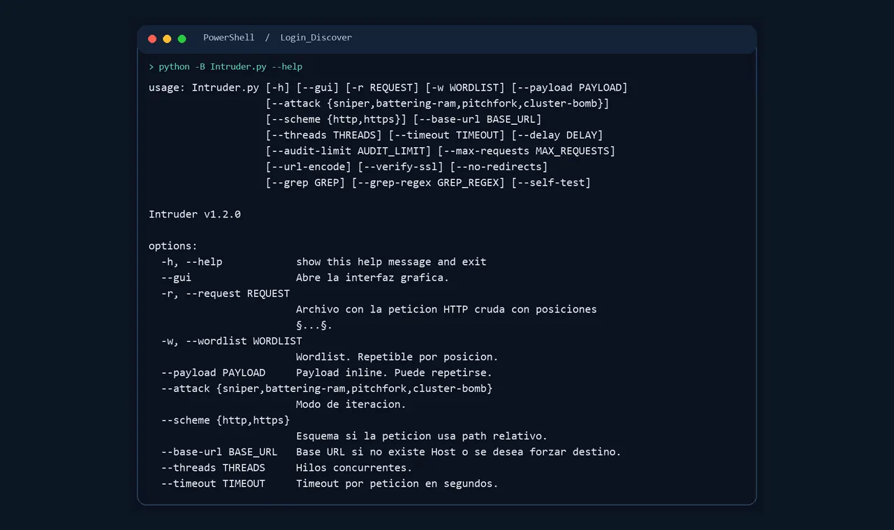
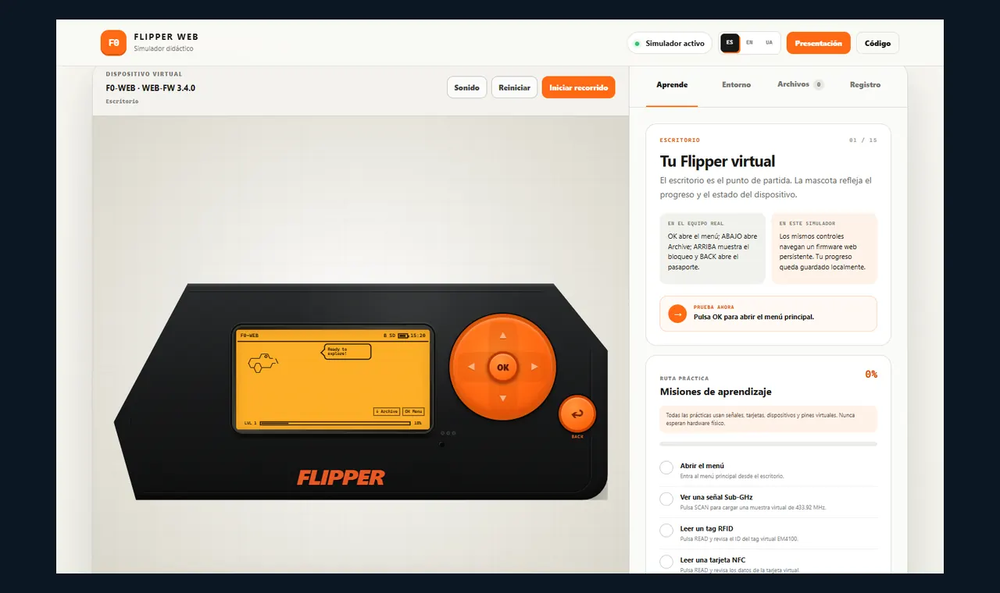
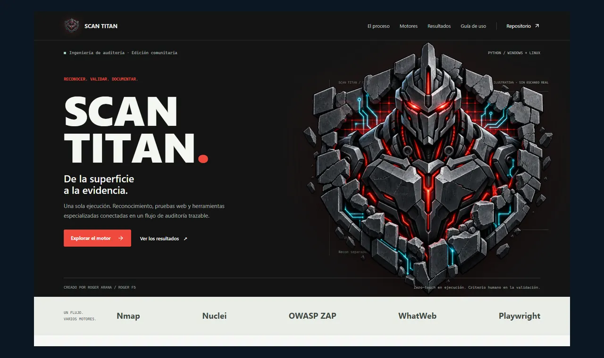
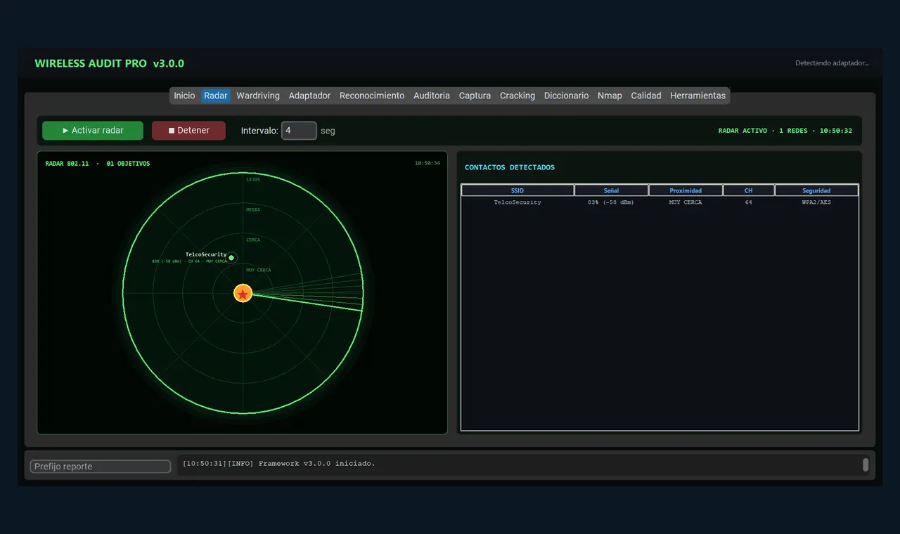
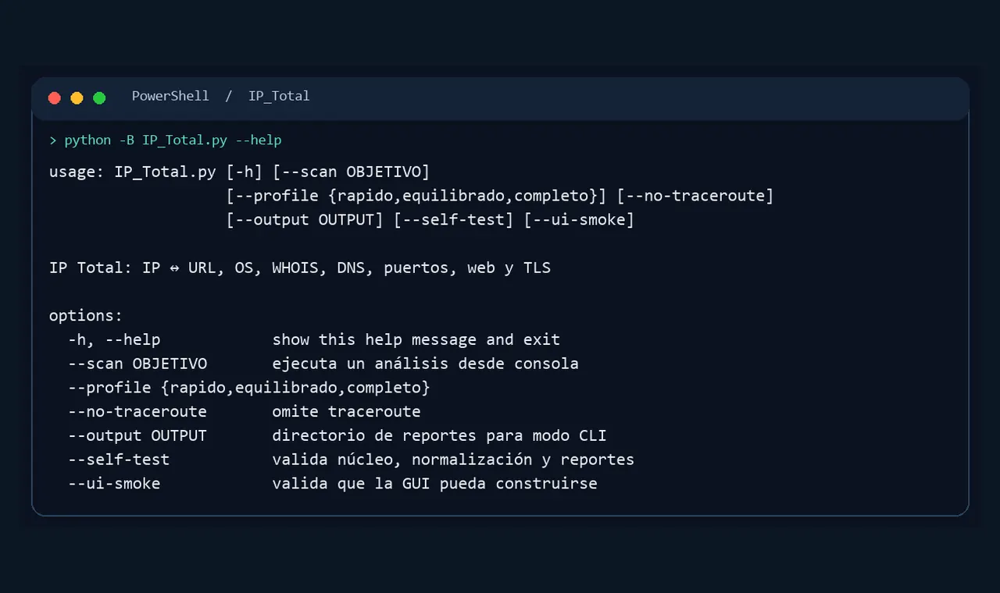
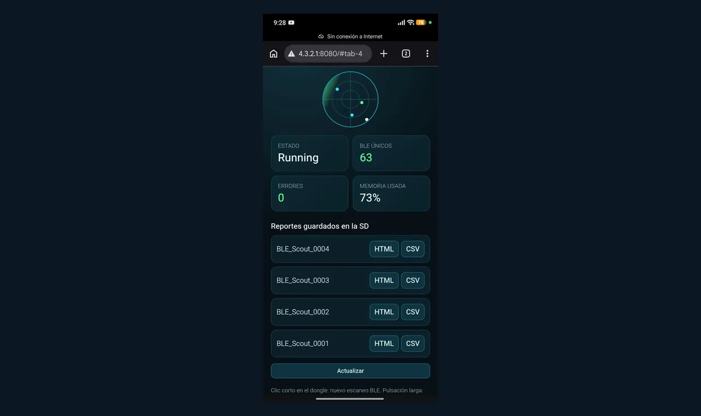

CAPTURA · CLI REALLogin Discover
Descubre paneles de acceso y analiza peticiones de autenticación con controles de volumen y comparación de respuestas.
Py Python>_ CLI▣ GUI
PORTAFOLIO ABIERTO · AUDITORÍA APLICADA
Seis herramientas para explorar superficies de ataque, interpretar señales y documentar evidencia. Elige una ficha, entiende su función y abre la demo o el repositorio.
00 / CENTRO DE MANDO
Selecciona un módulo para ver qué recibe, cómo trabaja y qué evidencia entrega.
01 / EXPLORAR
Cada tarjeta conecta la explicación técnica con su código y una ruta de uso verificable.
Mostrando 6 herramientas

CAPTURA · CLI REALDescubre paneles de acceso y analiza peticiones de autenticación con controles de volumen y comparación de respuestas.

CAPTURA · DEMO WEBSimulador interactivo de funciones, menús y periféricos virtuales para explicar Flipper Zero sin hardware.

CAPTURA · WEB DEL PROYECTOMotor de auditoría que enlaza reconocimiento, pruebas web, herramientas externas y reportes trazables.

CAPTURA · APLICACIÓNInventario inalámbrico, radar, wardriving y diagnóstico de adaptadores en una sola interfaz.

CAPTURA · CLI REALPerfil de IP o dominio con DNS, WHOIS, puertos, web y TLS; exporta reportes HTML y JSON.

CAPTURA · DASHBOARD LOCALFirmware de inventario BLE pasivo para LILYGO T-Dongle-S3, con radar y reportes en microSD.
02 / USO EN VIVO
El modo escenario amplía cada captura auténtica y explica entrada, proceso y evidencia. Abre directamente el simulador web o la guía del proyecto; las aplicaciones de escritorio y el firmware se ejecutan fuera de esta página.
Abre el simulador y las páginas técnicas en pestañas, prepara las aplicaciones locales y comprueba el hardware BLE. El paquete estático también puede servirse localmente.